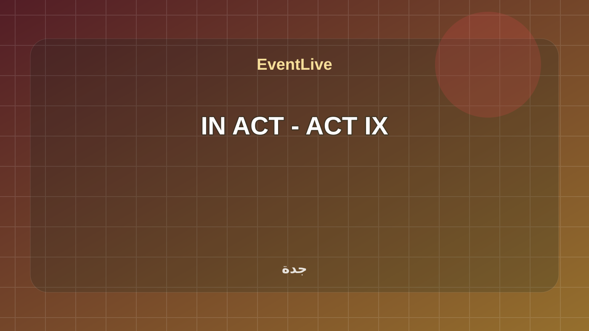
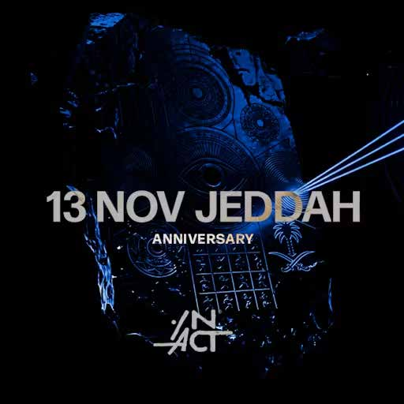
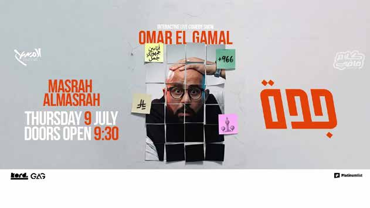
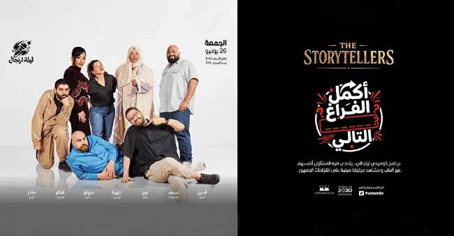

تابع فعاليات جدة
هذه الروابط تتحدث مع كل بناء وتعرض الفعاليات القادمة والجارية لهذا السياق فقط.
فعاليات جدة القادمة والجارية والمنتهية كما تظهر في EventLive مع مصدر ووقت واضح.
هذه الروابط تتحدث مع كل بناء وتعرض الفعاليات القادمة والجارية لهذا السياق فقط.
استكشف معرض قلب البحر في ساحة متحف البحر الأحمر، معرض فوتوغراا يجمع أعمال ثاثة من أبرز المصورين العالماين، يان أرتوس برتران، وجان غومي، وسيباستياو سالغادو، احتفاءً باليوم العالمي للمحيطات.

استكشف معرض قلب البحر في ساحة متحف البحر الأحمر، معرض فوتوغراا يجمع أعمال ثاثة من أبرز المصورين العالماين، يان أرتوس برتران، وجان غومي، وسيباستياو سالغادو، احتفاءً باليوم العالمي للمحيطات.
تفاصيل الحضور
تابعوا مباريات كأس العالم في منطقة المشجعين وسط أجواء كروية استثنائية، وفعاليات متنوعة مع العائلة وااصدقاء في جدة بروميناد.
تفاصيل الحضور
فعالية تنقل أجواء كأس العالم إلى عبادي الجوهر أرينا تجمع شاشات عملاقة، ومناطق تفاعلية، جوائز، وغيرها. عيشوا المونديال مع بنش مارك - عبادي الجوهر أرينا ضمن رياضة وفعاليات جماهيرية في جدة. تبدأ الفعالية ١١/٠٦/٢٠٢٦، ١٢:٠٠ ص وتنتهي ١٩/٠٧/٢٠٢٦، ١١:٥٩ م حسب البيانات المتاحة. تعرض الصفحة وقت الفعالية وموقعها ومصدرها وروابط التقويم والاتجاهات عند توفرها. المصدر: Visit Saudi Summer Calendar PDF.
تفاصيل الحضور
تقدّم بوابة المونديال في جدة تجربة جماهيرية متكاملة لمشاهدة مباريات كأس العالم على شاشات عملاقة، مع مطاعم، وألعاب، ومنطقة أطفال، وفعاليات للعائات ومحبي كرة القدم.
تفاصيل الحضور
استكشف معرضاً غامراً يجمع بين الحرف النسيجية التقليدية والفن المعاصر، في رؤية فنية تمزج بين الأصالة والتجريب وتربط الماضي بالحاضر عبر رموز مستوحاة من التراث وااساطير.
تفاصيل الحضور
فعالية رسمية من تقويم جامعة الملك عبدالعزيز. التاريخ المعلن: 07 Jul 2026 - 29 Jul 2026. Registration Now Open for Children at the Childhood Studies Center for the Academic Year 1448 AH ضمن جامعات ومجتمع في جدة. تبدأ الفعالية ٠٧/٠٧/٢٠٢٦، ٩:٠٠ ص وتنتهي ٢٩/٠٧/٢٠٢٦، ٦:٠٠ م حسب البيانات المتاحة. تعرض الصفحة وقت الفعالية وموقعها ومصدرها وروابط التقويم والاتجاهات عند توفرها. المصدر: Saudi Universities and Technical Colleges.
تفاصيل الحضوراستمتع بمهرجان لحن المملكة، فعالية موسيقية نوعية تكرّم رموز التلحين السعودي والخليجي من خال حفلات غنائية تُقدّم أعمالهم الخالدة بأسلوب معاصر كل ليلة.
تفاصيل الحضوريعود بطل العالم السابق للوزن الثقيل، أنتوني جوشوا، إلى الحلبة في جدة، ليواجه كريستيان برينغا غير المهزوم، في نزال حاسم. The Comeback ضمن رياضة وفعاليات جماهيرية في جدة. تبدأ الفعالية ٢٥/٠٧/٢٠٢٦، ١٢:٠٠ ص وتنتهي ٢٥/٠٧/٢٠٢٦، ١١:٥٩ م حسب البيانات المتاحة. تعرض الصفحة وقت الفعالية وموقعها ومصدرها وروابط التقويم والاتجاهات عند توفرها. المصدر: Visit Saudi Summer Calendar PDF.
تفاصيل الحضور
تعود IN ACT إلى جدة في 11 سبتمبر، معلنة انطلاق موسم جديد بإنتاج بصري غامر، إيقاعات متواصلة، وطاقة تمتد حتى الفجر. IN ACT - ACT IX ضمن رياضة وفعاليات جماهيرية في جدة. تبدأ الفعالية ١١/٠٩/٢٠٢٦، ١٢:٠٠ ص وتنتهي ١١/٠٩/٢٠٢٦، ١١:٥٩ م حسب البيانات المتاحة. تعرض الصفحة وقت الفعالية وموقعها ومصدرها وروابط التقويم والاتجاهات عند توفرها. المصدر: Visit Saudi Summer Calendar PDF.
تفاصيل الحضور
ACT XI تمثل فصلاً جديدً في في رحلة ،IN ACT احتفالاً بعامين من الموسيقى والحركة والناس الذين كانوا جزءًا منها. IN ACT ANNIVERSARY - ACT XI ضمن ترفيه وعائلات في جدة. تبدأ الفعالية ١٣/١١/٢٠٢٦، ١٢:٠٠ ص وتنتهي ١٣/١١/٢٠٢٦، ١١:٥٩ م حسب البيانات المتاحة. تعرض الصفحة وقت الفعالية وموقعها ومصدرها وروابط التقويم والاتجاهات عند توفرها. المصدر: Visit Saudi Summer Calendar PDF.
تفاصيل الحضور
فعالية رسمية من تقويم جامعة الملك عبدالعزيز. التاريخ المعلن: 01 Dec 2026 - 02 Dec 2026. Future Frontiers for Businesses: Catalysts for Growth in a Transformational Economy ضمن مؤتمرات ومنتديات في جدة. تبدأ الفعالية ٠١/١٢/٢٠٢٦، ٩:٠٠ ص وتنتهي ٠٢/١٢/٢٠٢٦، ٦:٠٠ م حسب البيانات المتاحة. تعرض الصفحة وقت الفعالية وموقعها ومصدرها وروابط التقويم والاتجاهات عند توفرها. المصدر: Saudi Universities and Technical Colleges.
تفاصيل الحضور
The Global Water Innovation Award (GPIW) is run by the Saudi Water Authority and brings together a top bunch of innovators, researchers, entrepreneurs, and expe… المصدر الرسمي: الهيئة السعودية للمياه.
تفاصيل الحضور
With a broader international reach and distinguished participation from around the world, the Innovation Driven Water Sustainability Conference 2026 serves as a… المصدر الرسمي: الهيئة السعودية للمياه.
تفاصيل الحضور
عمر الجمال في جدة مع "كام فاضي"، ستاند أب مختلف كلياً، الجمهور جزء من الحكاية، لعرض في يتكرر. عمر الجمل - حفلة ستاند أب كوميدي ضمن ترفيه وعائلات في جدة. تبدأ الفعالية ٠٩/٠٧/٢٠٢٦، ١٢:٠٠ ص وتنتهي ٠٩/٠٧/٢٠٢٦، ١١:٥٩ م حسب البيانات المتاحة. تعرض الصفحة وقت الفعالية وموقعها ومصدرها وروابط التقويم والاتجاهات عند توفرها. المصدر: Visit Saudi Summer Calendar PDF.
تفاصيل الحضور
A specialized national event that highlights the issues, challenges, and development opportunities within the water sector, reinforcing the Saudi Water Authority’s role in supporting water supply security, enhancing system efficiency, and raising awareness of sustainable water resource management.
تفاصيل الحضور
ليلة علي السيّد في جدة تجمع بين الكوميديا الذكية، القصص الممتعة، والضحك المتواصل في عرض حي في يُفوّت. عرض علي السيد في جدة ضمن ترفيه وعائلات في جدة. تبدأ الفعالية ٢٧/٠٦/٢٠٢٦، ١٢:٠٠ ص وتنتهي ٢٧/٠٦/٢٠٢٦، ١١:٥٩ م حسب البيانات المتاحة. تعرض الصفحة وقت الفعالية وموقعها ومصدرها وروابط التقويم والاتجاهات عند توفرها. المصدر: Visit Saudi Summer Calendar PDF.
تفاصيل الحضور
أكمل الفراغ يقدم كوميديا ارتجالية في جدة، حيث تتحول اقتراحات الجمهور إلى مشاهد كوميدية مباشرة على المسرح. أكمل الفراغ التالي في جدة ضمن ترفيه وعائلات في جدة. تبدأ الفعالية ٢٦/٠٦/٢٠٢٦، ١٢:٠٠ ص وتنتهي ٢٦/٠٦/٢٠٢٦، ١١:٥٩ م حسب البيانات المتاحة. تعرض الصفحة وقت الفعالية وموقعها ومصدرها وروابط التقويم والاتجاهات عند توفرها. المصدر: Visit Saudi Summer Calendar PDF.
تفاصيل الحضورخمسة كوميداين وخمسة مغناين يجتمعون عا مسرح واحد لليلة تمزج بين الستاند أب والطرب الحي. ليلة 5×5 )خمسة كوميداين × خمسة مغناين( في جدة ضمن رياضة وفعاليات جماهيرية في جدة. تبدأ الفعالية ٢٦/٠٦/٢٠٢٦، ١٢:٠٠ ص وتنتهي ٢٦/٠٦/٢٠٢٦، ١١:٥٩ م حسب البيانات المتاحة. تعرض الصفحة وقت الفعالية وموقعها ومصدرها وروابط التقويم والاتجاهات عند توفرها. المصدر: Visit Saudi Summer Calendar PDF.
تفاصيل الحضور